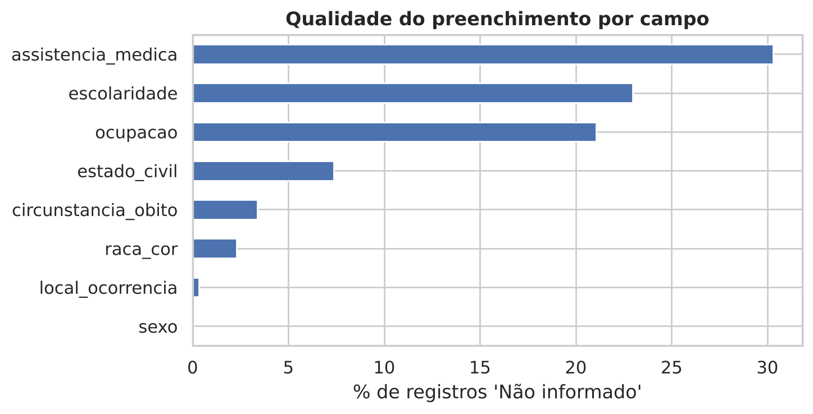
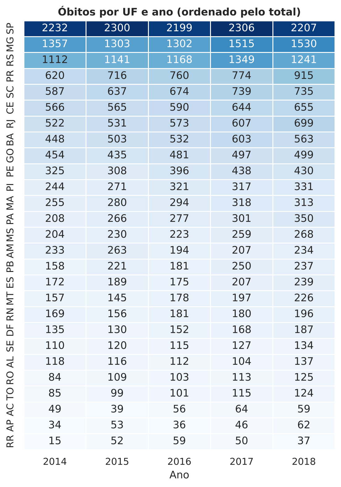
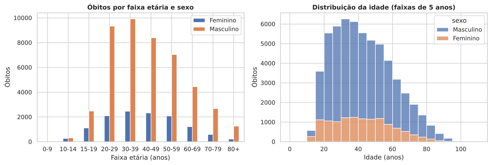
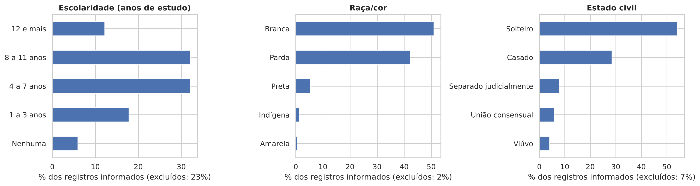
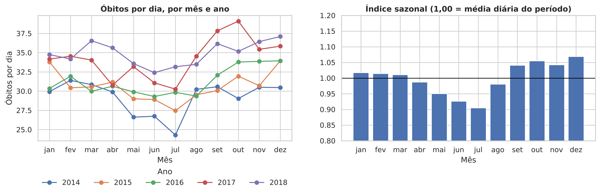
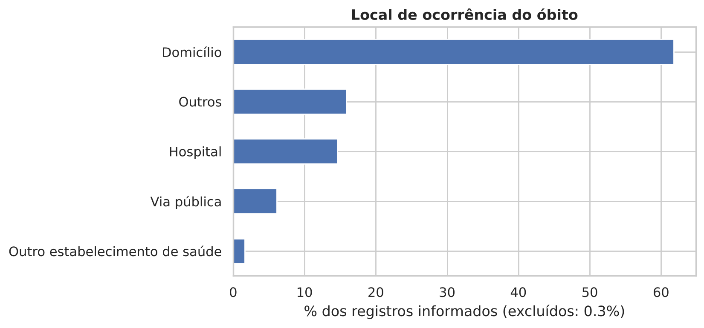
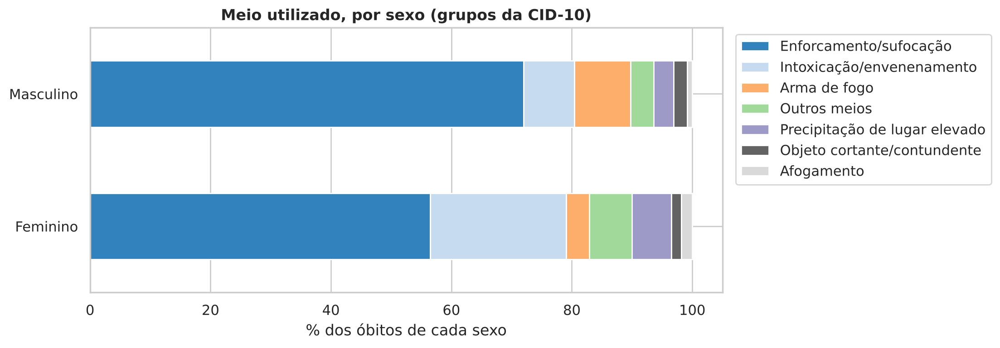

Resumo
As lesões autoprovocadas são um tema prioritário de saúde pública, e seu monitoramento depende de dados de boa qualidade. Este trabalho analisa 58.492 óbitos registrados no Sistema de Informações sobre Mortalidade (SIM/DataSUS) entre 2014 e 2018, classificados nas causas básicas X60 a X84 da CID-10, a partir de uma base pública do Kaggle. Com um pipeline reproduzível em Python (pandas, Matplotlib e Plotly), tratamos inconsistências de datas e categorias sem descartar registros e conduzimos uma análise exploratória guiada por três perguntas: evolução temporal e geográfica, perfil das vítimas, e sazonalidade e local de ocorrência. Os óbitos passaram de 10.653 em 2014 para 12.733 em 2018 (+19,5%), com maior crescimento relativo na região Norte (+40,0%) e menor no Sudeste (+9,2%). Homens correspondem a 78,8% dos óbitos com sexo informado, e pessoas de 20 a 49 anos concentram cerca de 59% dos registros. O domicílio foi o local de 61,8% das ocorrências informadas, e o índice sazonal variou de 0,91 (julho) a 1,07 (dezembro). Como a base traz apenas contagens, sem população de referência, os resultados descrevem a composição dos óbitos e não o risco relativo de cada grupo. Código, dados tratados e documentação estão disponíveis em repositório aberto.
Palavras-chave: análise de dados; saúde pública; mortalidade; DataSUS; Python; ciência aberta.
1. Introdução
A morte por lesão autoprovocada é um tema prioritário de saúde pública, e as políticas de prevenção dependem de informação confiável sobre quem morre, onde e quando.
No Brasil, a principal fonte de informação sobre óbitos é o Sistema de Informações sobre Mortalidade (SIM), mantido pelo Ministério da Saúde e alimentado pelas declarações de óbito. Seus microdados são públicos, o que permite análises reprodutíveis por qualquer pessoa, mas exigem cuidado com a qualidade do preenchimento e com a interpretação de contagens sem população de referência.
Este estudo faz uma análise exploratória dos óbitos por lesão autoprovocada registrados no SIM entre 2014 e 2018 e documenta o processo de tratamento dos dados de forma aberta e reproduzível. Ele responde às seguintes perguntas de pesquisa:
- RQ1: como evoluíram os óbitos por ano, região e unidade da federação (UF)?
- RQ2: qual o perfil dos óbitos por sexo, faixa etária, escolaridade, raça/cor e estado civil?
- RQ3: há padrão sazonal ou diferenças por local de ocorrência e meio utilizado?
2. Metodologia e pipeline de dados
2.1 Fonte e granularidade
Os dados vêm do conjunto Dados de suicídio no Brasil, 2014 a 2018, publicado no Kaggle e originado do SIM/DataSUS (Ministério da Saúde). Cada linha é um óbito, com 17 variáveis sobre local, data, perfil da pessoa e causa básica (CID-10). A base não traz denominadores populacionais.
2.2 Tratamento
O arquivo bruto está em latin-1 e foi lido com pandas. Nenhuma linha foi descartada: inconsistências viraram valores ausentes ou receberam flags, e cada correção foi contada em um relatório (etl_report.json). Os principais passos foram:
- conversão de datas com ano de 2 dígitos, corrigindo o século dos nascimentos que ficaram posteriores ao óbito (21.473 casos), validada pela idade informada (99,98% de concordância, com tolerância de 1 ano);
- substituição de idades fora de 0 a 110 por valor ausente (2 casos) e do código inválido
6em local de ocorrência (24 casos); - preenchimento de nulos categóricos com “Não informado”;
- criação de faixa etária, região, e uma flag para causas básicas entre X60 e X84 da CID-10 (58.492 linhas), usada para restringir as análises.
def tratar_datas(df, rel):
obito = pd.to_datetime(df["data_obito"], format="%d-%m-%y", errors="coerce")
nasc = pd.to_datetime(df["data_nascimento"], format="%d-%m-%y", errors="coerce")
posterior = nasc > obito # ano de 2 dígitos é ambíguo
nasc = nasc.mask(posterior, nasc - pd.DateOffset(years=100))
rel["nascimentos_corrigidos_seculo"] = int(posterior.sum())
...O código completo está em src/etl.py e o dicionário de variáveis em data/data_dictionary.md.
2.3 Qualidade dos dados
Os campos com maior ausência de informação são assistência médica (30,3% de registros “Não informado”), escolaridade (23,0%) e ocupação (21,1%). Estado civil (7,4%), circunstância do óbito (3,4%), raça/cor (2,3%) e local de ocorrência (0,3%) têm pouca ausência, e sexo, 15 registros. Nas análises seguintes, os percentuais por categoria desconsideram os registros “Não informado”, e a parcela excluída é sempre indicada.

3. Resultados e discussão
Todas as análises usam os 58.492 óbitos com causa básica entre X60 e X84. Os números descrevem contagens: sem a população de referência, não permitem afirmar que um grupo ou local tenha maior risco.
3.1 RQ1: evolução por ano, região e UF
Os óbitos cresceram em todos os anos do período, de 10.653 em 2014 para 12.733 em 2018, um aumento de 19,5%. A maior variação anual ocorreu entre 2016 e 2017 (+9,3%); nos demais intervalos, o crescimento ficou entre 1,9% e 4,9%.
Esse aumento não pode ser lido, por si só, como crescimento do risco: a população também cresceu, e a base traz apenas contagens. Parte da alta pode refletir melhora na cobertura e na qualidade do registro, hipótese que estes dados não permitem separar de um aumento real. Avaliar a tendência do risco exige taxas por 100 mil habitantes, o que fica como trabalho futuro.
O Sudeste concentra 37,9% dos óbitos, seguido por Nordeste (23,3%), Sul (22,5%), Centro-Oeste (8,9%) e Norte (7,4%), ordem que acompanha, em boa medida, o tamanho populacional das regiões . Em termos relativos, o Norte teve o maior crescimento entre 2014 e 2018 (+40,0%, de 708 para 991 óbitos) e o Sudeste o menor (+9,2%); Nordeste, Sul e Centro-Oeste ficaram entre 24% e 25%.

Entre as UFs, São Paulo (11.244 óbitos), Minas Gerais (7.007) e Rio Grande do Sul (6.011) têm as maiores contagens, e as três somam 41,5% do total; só São Paulo responde por 19,2%. Esses valores refletem em parte o tamanho da população e não indicam, por si só, risco maior nesses estados. Nas variações relativas entre 2014 e 2018 destacam-se Roraima (+146,7%), Amapá (+82,4%) e Pará (+68,3%), mas partindo de bases pequenas (15 óbitos em Roraima e 34 no Amapá em 2014), o que torna as variações percentuais instáveis. São Paulo foi a única UF com redução (−1,1%).
3.2 RQ2: perfil dos óbitos

Homens somam 78,8% dos óbitos com sexo informado (46.077 contra 12.400 mulheres), ou 3,7 homens para cada mulher, razão estável ao longo do período (entre 3,66 e 3,81). Entre 2014 e 2018 o número de mulheres cresceu mais que o de homens (+22,2% contra +18,8%), mas a composição por sexo mudou pouco (de 79,0% para 78,6% de homens).
A razão entre sexos varia com a idade: é a menor entre 10 e 14 anos (1,15 homem por mulher) e a maior a partir dos 70 anos (4,59 entre 70 e 79 e 5,62 acima de 80). A idade mediana é de 40 anos (41 entre as mulheres e 40 entre os homens). Pessoas de 20 a 49 anos correspondem a cerca de 59% dos registros, e as de 10 a 29 anos a 26,7%. Os registros de 0 a 9 anos são pouquíssimos (menos de 0,1%) e merecem verificação quanto a erros de preenchimento.

Entre os registros com escolaridade informada (77,0% do total), 64,1% têm de 4 a 11 anos de estudo, 17,8% de 1 a 3 anos, 12,2% têm 12 anos ou mais e 5,9% nenhuma escolaridade. Quanto à raça/cor (97,7% informados), 51,0% são brancas e 42,2% pardas, seguidas de pretas (5,3%), indígenas (1,1%) e amarelas (0,4%). Solteiros representam 54,1% dos registros com estado civil informado, e casados 28,4%.
Esses percentuais descrevem a composição dos óbitos, não o risco de cada grupo. Sem a distribuição dessas características na população geral, não é possível afirmar que algum grupo tenha maior ou menor risco: a participação de brancas e pardas, por exemplo, reflete também a composição racial do país. Escolaridade e estado civil, além disso, estão fortemente associados à idade, o que pede padronização por idade em análises futuras.
3.3 RQ3: sazonalidade, local de ocorrência e meio utilizado

A distribuição mensal não é uniforme, mesmo descontando o número de dias de cada mês (χ² = 143,6; 11 graus de liberdade; p < 0,001). O índice sazonal indica média diária 7% acima da média do período em dezembro (1,07) e 9% abaixo em julho (0,91). De setembro a março o índice fica acima de 1,00, e de abril a agosto, abaixo. Esse padrão, com valores mais altos na primavera e no verão e mais baixos no outono e no inverno do hemisfério sul.
O tamanho do desvio é modesto: a amplitude entre os índices de maior e de menor valor é de cerca de 16 pontos percentuais. Com mais de 58 mil registros, o teste detecta diferenças pequenas, então a significância estatística não deve ser lida como diferença grande. O padrão também aparece de forma irregular entre os anos (painel da esquerda), e o período de cinco anos é curto para afirmar regularidade.

Entre os registros com local informado (99,7%), 61,8% ocorreram no domicílio, 14,6% em hospitais, 6,1% em via pública e 1,6% em outros estabelecimentos de saúde; 15,9% foram classificados como “Outros”. Entre as pessoas com informação sobre assistência médica (69,7% do total), 79,9% não tiveram assistência. Esse dado exige cautela: o campo tem 30,3% de ausência e não distingue falta de acesso de falta de tempo hábil para atendimento.

Em ambos os sexos predomina o grupo enforcamento/sufocação (72,0% entre os homens e 56,5% entre as mulheres). Entre as mulheres, intoxicação/envenenamento (22,6% contra 8,4%) e precipitação de lugar elevado (6,5% contra 3,3%) são mais frequentes, enquanto as armas de fogo aparecem mais entre os homens (9,3% contra 3,9%). Diferenças na distribuição dos meios são relevantes para a prevenção, por exemplo em estratégias de restrição de acesso a meios . Por se tratar de tema sensível, este artigo apresenta apenas grupos amplos da CID-10.
4. Conclusão
RQ1. Os óbitos por lesão autoprovocada cresceram 19,5% entre 2014 e 2018, com maior aumento relativo no Norte (+40,0%) e menor no Sudeste (+9,2%). As maiores contagens estão em São Paulo, Minas Gerais e Rio Grande do Sul, o que reflete em parte o tamanho de suas populações; sem taxas, o aumento observado não distingue crescimento de risco, de população e de melhoria do registro.
RQ2. Os óbitos são predominantemente masculinos (78,8%, ou 3,7 homens por mulher, razão estável no período) e se concentram entre 20 e 49 anos (cerca de 59%), com idade mediana de 40 anos. A composição por escolaridade, raça/cor e estado civil foi descrita, mas não permite inferir risco por grupo sem dados populacionais.
RQ3. Há sazonalidade estatisticamente detectável, com índices entre 0,91 (julho) e 1,07 (dezembro), porém de magnitude modesta. A maioria das ocorrências se dá no domicílio (61,8%), e a distribuição dos meios difere por sexo, o que interessa a ações de prevenção.
Limitações
- A base tem contagens, não taxas; comparações entre locais e grupos exigem dados populacionais externos.
- Registros de mortalidade estão sujeitos a subnotificação e a erros de classificação da causa.
- Campos como assistência médica (30,3%), escolaridade (23,0%) e ocupação (21,1%) têm muitos valores não informados.
- A análise é descritiva e não permite inferência causal.
Trabalhos futuros
Incorporar as estimativas populacionais do IBGE para calcular taxas por 100 mil habitantes, com padronização por idade; analisar os dados por município; e estender a série para anos posteriores a 2018.
5. Disponibilidade dos dados e declaração FAIR
| Princípio | Como é atendido |
|---|---|
| Findable | README com resumo, palavras-chave e link para a fonte original; autoria e disciplina identificadas. |
| Accessible | Repositório público no GitHub e artigo no GitHub Pages, sem credenciais. |
| Interoperable | Dicionário de dados em data/data_dictionary.md; dados tratados em Parquet e CSV comprimido. |
| Reusable | Código sob licença MIT; dados e texto sob CC-BY 4.0; dependências fixadas em requirements.txt. |
Para reproduzir o pipeline completo:
git clone https://github.com/[USUARIO]/[REPOSITORIO].git
cd [REPOSITORIO]
python -m venv .venv && source .venv/bin/activate
pip install -r requirements.txt
python -m src.etl6. Referências
BRASIL. Ministério da Saúde. Sistema de Informações sobre Mortalidade (SIM). DataSUS. Disponível em: https://datasus.saude.gov.br. Acesso em: [data].
PSICODATA. Dados de suicídio no Brasil, 2014 a 2018. Kaggle. Disponível em: https://www.kaggle.com/datasets/psicodata/dados-de-suicdio-no-brasil-2014-a-2018. Acesso em: [data].
MCKINNEY, W. Data structures for statistical computing in Python. In: PYTHON IN SCIENCE CONFERENCE, 9., 2010. Proceedings [...]. 2010. p. 56-61.
ORGANIZAÇÃO MUNDIAL DA SAÚDE. CID-10: Classificação Estatística Internacional de Doenças e Problemas Relacionados à Saúde. 10. rev. [local, editora, ano].
WILKINSON, M. D. et al. The FAIR Guiding Principles for scientific data management and stewardship. Scientific Data, v. 3, 160018, 2016.
Os dados tratam de mortes e devem ser lidos com respeito. Se você ou alguém próximo precisa de apoio, o Centro de Valorização da Vida (CVV) atende gratuitamente, 24 horas, pelo telefone 188 e em cvv.org.br.